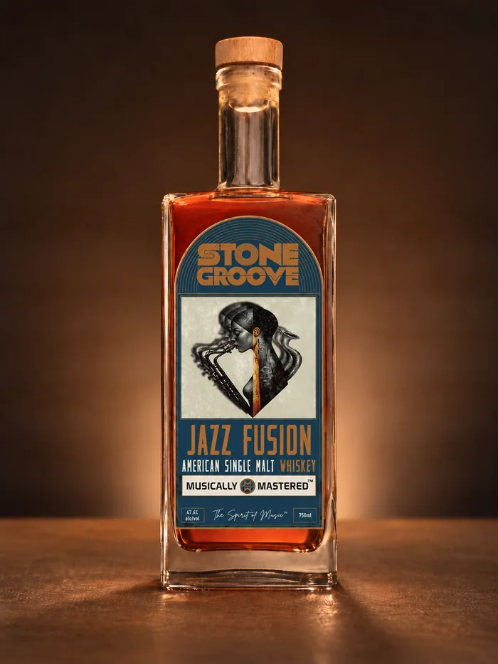
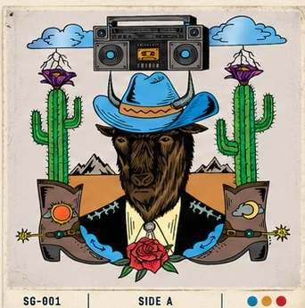

SHISHA SAMPLE / Musically Mastered™The Spirit of Music™ · MM / 001
A proprietary approach to flavor
Musically Mastered™
Sound isPhysics.Flavor isChemistry.
Music is art. Its physical signature can be measured.
Musically Mastered™ brings them together.
Our proprietary approach uses sonic energy to help shape the character of exceptional whiskey—guiding development, encouraging integration, and pursuing a more refined final expression.
The music isn't simply playing. It's participating.
Spectral portrait / Analysis of an original Beethoven-motif digital studyVisual source: audio frequencies over time
02 / The Idea · Physics Meets Chemistry
Music as input. Whiskey as outcome.
At SHISHA SAMPLE, music is more than atmosphere. It is an active force in how our whiskey comes to life.
Through our proprietary Musically Mastered™ process, sonic energy becomes part of a broader approach to flavor development—one that helps shape character without reducing the story to a single technical trick.
Music / Measurable StructurePlate 01 — Digital Study
Lower frequenciesHarmonic structureHigher frequencies
Physics Meets ChemistryWhiskey develops much of its character through the interaction between spirit and wood. Soluble compounds drawn from oak contribute aroma, flavor, and complexity. Our process uses sonic energy to influence that interaction—creating real, measurable changes in the whiskey as part of its final development.
04 / MEASURED, NOT MYTHOLOGIZED
SHISHA SAMPLE / EVIDENCE SERIES
THE DIFFERENCE
IS MEASURABLE.
THE CLAIMTHE EVIDENCETHE GLASS
THE POINT OF PROOF
Analysis tells us what changed. Tasting tells us whether it matters.
01 / ANALYTICAL FINDING
CHEMICAL
DIFFERENCES.
DOCUMENTED.
Independent laboratory analysis comparing samples before and after Musically Mastered™ treatment has identified measurable differences in chemical composition.
02 / WHAT ANALYSIS CAN TELL USBefore-and-after samples have shown measurable differences in chemical composition.
03 / THE SENSORY GOALOur ambition is more compelling expression, greater integration, and a smoother, more refined finish.
LINER NOTES / THE PROCESS
THE METHOD,
CLEARLY.
The science, the whiskey, and the role of music.
Straight answers about what makes Musically Mastered™ different.
01
What is Musically Mastered™ whiskey?
Musically Mastered™ is SHISHA SAMPLE' proprietary approach to whiskey finishing and refinement. We begin with carefully selected, mature American whiskeys, build our blends, and apply a multi-stage treatment process incorporating sonic energy. Our objective is to develop greater character, integration, and balance in the finished spirit.
How does music interact with whiskey?
Sound is physical energy. Our process uses equipment that transmits sonic vibrations into the whiskey's treatment environment. That sonic input is combined with additional proprietary processing designed to influence the spirit's final development. Music is more than the inspiration behind our whiskey. It participates in how we make it.
Is Musically Mastered™ a replacement for traditional barrel aging?
No. Exceptional mature whiskey is our starting point, not something we're trying to shortcut. We select aged American whiskeys for their existing character and complexity. Musically Mastered™ is an additional finishing and refinement process—not a substitute for time in oak.
Has the process been scientifically tested?
Yes. Independent laboratory analysis comparing whiskey samples before and after Musically Mastered™ treatment has identified measurable differences in chemical composition. These findings document changes associated with the complete treatment process. Sensory evaluation helps us determine whether the resulting whiskey delivers the character, balance, and finish we're seeking.
Who created Musically Mastered™?
Musically Mastered™ was created by SHISHA SAMPLE founder Jeff Duggan, bringing together his background in music and technical disciplines. The guiding idea is rooted in the relationship between sound, physical energy, and the chemistry of whiskey—an exploration of what happens when the art of music becomes part of the craft of spirits.
05 / The Art Is in the Outcome
Great whiskey is our starting point.
We don’t use music to disguise ordinary whiskey. We begin with mature spirits that deserve attention. Musically Mastered™ is part of how we pursue something more: greater expression, deeper harmony, and a final pour that feels more complete than the spirit was on its own.
Like mixing and mastering in music production, the goal is not to overpower the source material. The goal is to bring its best qualities forward.
“The original distillate is the studio track. We engineer the final song.”

SHISHA SAMPLE / Jazz Fusion06 / The Collection
Four expressions.
Four distinct voices.
Musically Mastered™ is not a single flavor. It is a point of view expressed across the collection—each whiskey with its own personality, each one shaped by the same pursuit of character, integration, and refinement.

Country
Sweeter profile with vanilla, caramel, baked apple, and honeyed oak.

Blues
Soulful bourbon character with black cherry, cinnamon, toasted oak, and dark toffee.

Classic Rock
A bolder rye voice—structured, assertive, and richly seasoned.

Jazz Fusion
American single malt with banana, walnut, and sweet bread notes.
Design Demo by OCTETEC × MAKEZAA — Not an official venue website.